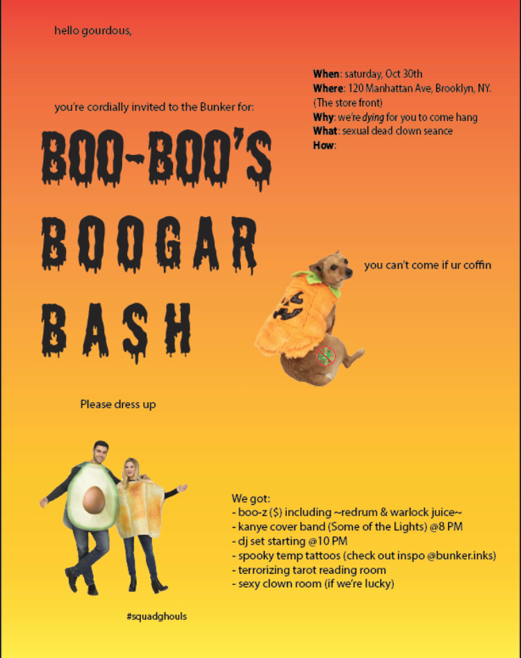
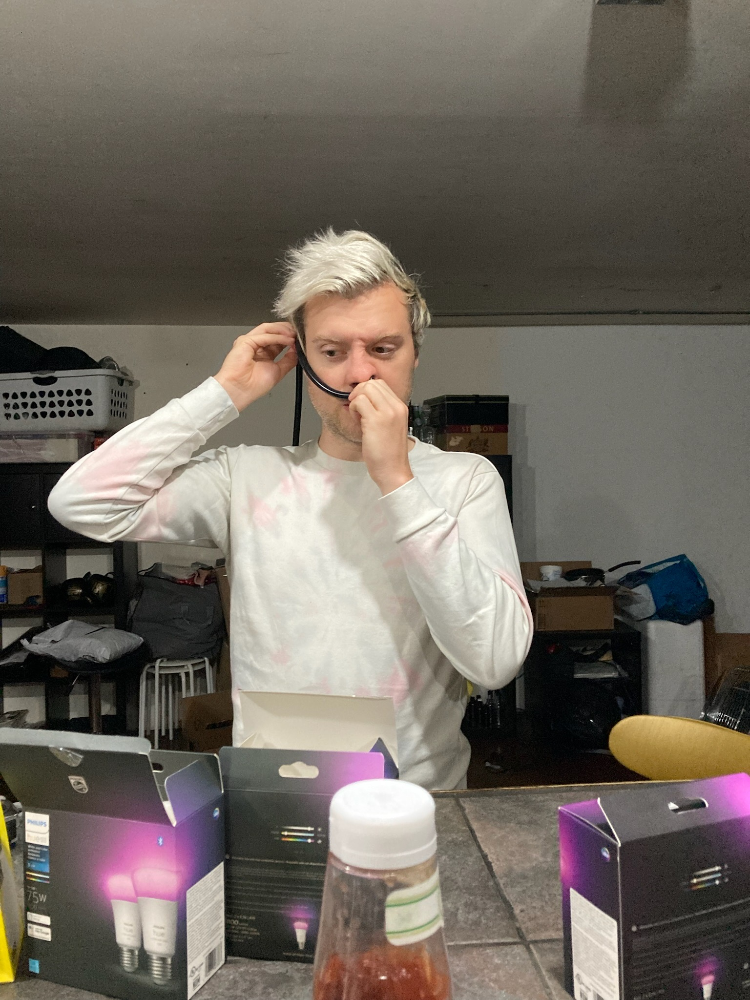
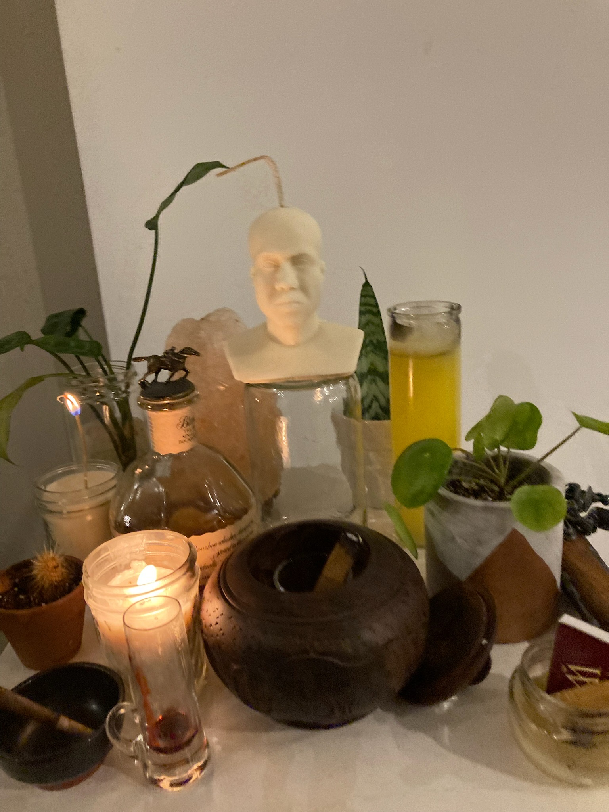
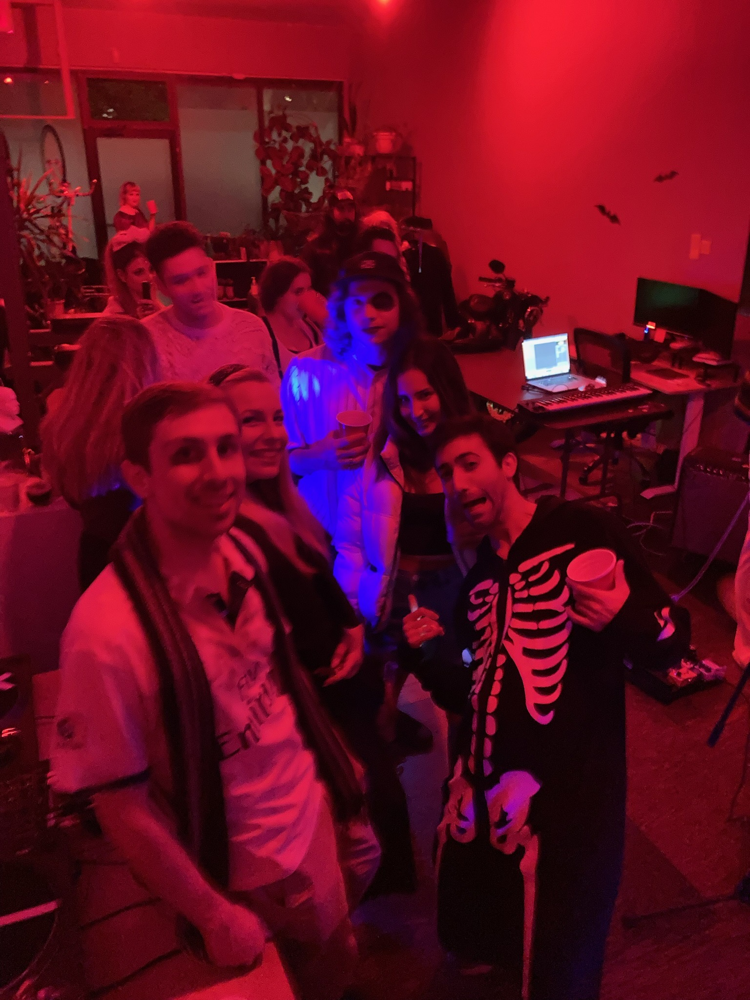
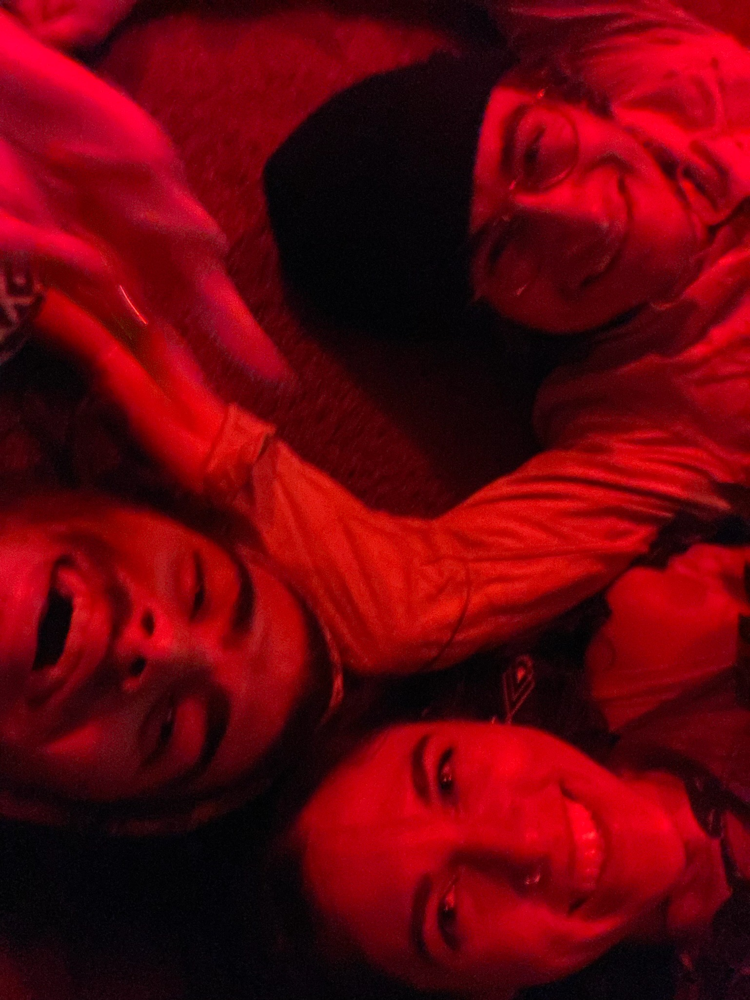
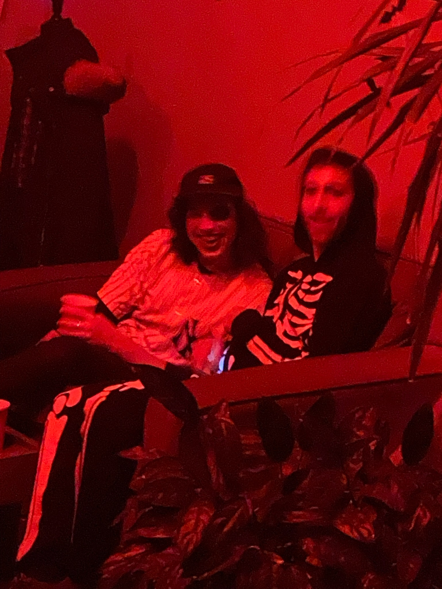
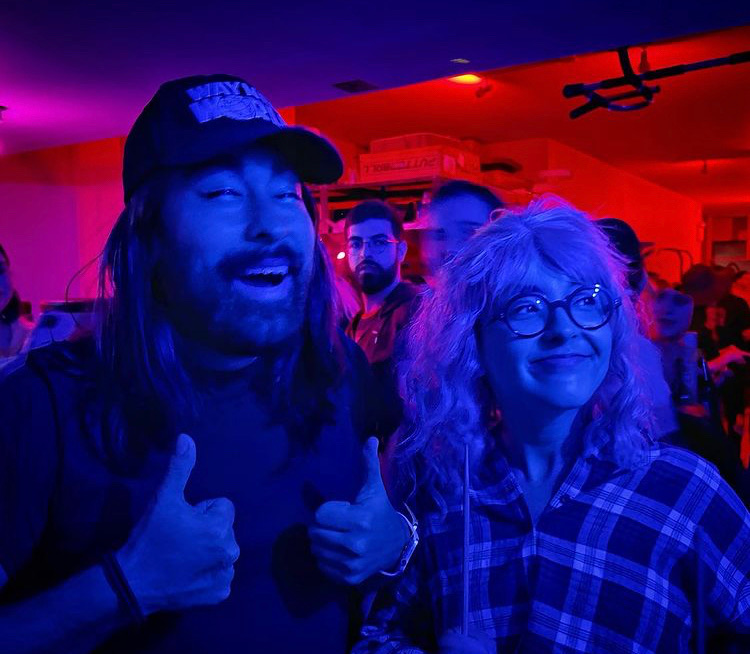

Events
We threw a big party once. There was a live band, a DJ dressed as Elvis Presley, several 10-gallon industrial Igloo jugs of cocktail beverages. There was also a clown seance.
Boo-Boo Boogar Bash is the paragon of a really good time that also happened to coincide with a theatrical cult uprising (all staged, of course). There were several clues laid throughout the night, which party goers were led to uncover. Once they uncovered the mystery, they were entreated to join Boo-Boo Boogar and accept a cloak.
When the clock struck midnight, things got weird.
Boo-Boo Boogar emerged from the *ahem* confusion and the party raged harder than ever.
      